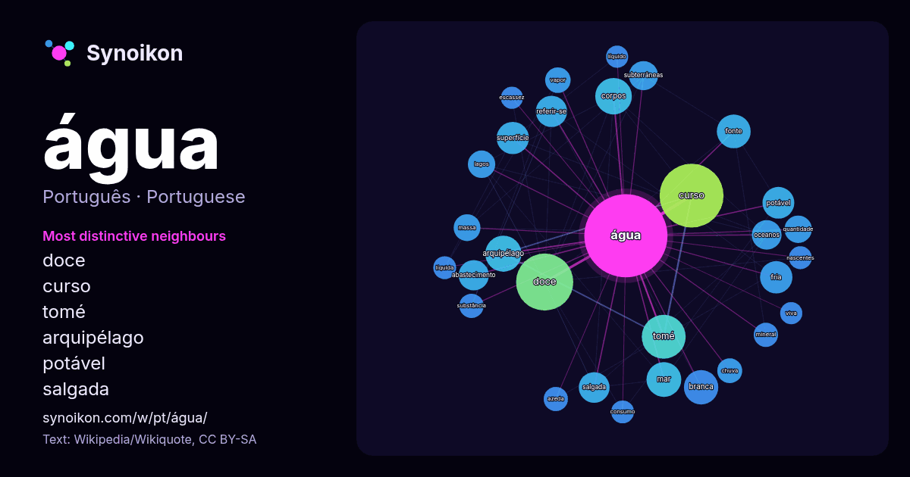

Português · palavra popular
água
“water” · As palavras encontradas ao seu redor em 1794 ocorrências da Wikipédia, Wikiquote.

Vizinhos mais característicos
- doce 75×
- curso 56×
- tomé 53×
- arquipélago 33×
- potável 31×
- salgada 29×
- referir-se 28×
- fria 27×
- abastecimento 25×
- subterrâneas 25×
- branca 22×
- superfície 20×
- oceanos 19×
- azeda 19×
- vapor 18×
- mineral 17×
- líquida 16×
- fonte 15×
- mar 15×
- escassez 15×
× = quantas vezes mais do que no texto geral da Wikipédia.
Vizinhos mais frequentes
- curso 125
- doce 100
- rio 90
- tomé 59
- corpos 41
- arquipélago 40
- mar 37
- branca 36
- fonte 35
- fria 32
- superfície 32
- potável 31
- terra 31
- referir-se 30
- salgada 29
- abastecimento 28
- oceanos 27
- subterrâneas 26
- santa 25
- lagos 23
Em contexto
- Nota: "Águas" redireciona para este artigo. Para outros significados, veja Águas (desambiguação) ou Água (desambiguação). Água (fórmula química: H2O) Wikipedia snippets · Água
- sobre a substância água. Para a lenda urbana, veja monóxido de di-hidrogênio (lenda urbana). Para uma abordagem mais genérica, veja Água. Para outros significados Wikipedia snippets · Propriedades físico-químicas da água
- rio é um curso de água natural, em geral de água doce, que desce por um canal até alcançar outro rio, um lago ou o oceano. Sua água vem da chuva, do derretimento Wikipedia snippets · Rio
- Mediterrâneo e Água Intermediária do Atlântico Sul. A Água Profunda do Atlântico Norte (NADW) é um complexo de quatro massas de água: duas formadas por Wikipedia snippets · Oceano Atlântico
- por oceanos de água salgada, com o restante consistindo de continentes e ilhas, os quais contêm muitos lagos e outros corpos de água que contribuem para Wikipedia snippets · Terra
- reservatório de água mantido em uma planta, veja Fitotelmo. Um corpo de água ou corpo-d'água é qualquer acumulação significativa de água, cobrindo usualmente Wikipedia snippets · Corpo de água
- Água do mar é a água encontrada em mares e oceanos. A água do mar de todo o mundo tem uma salinidade próxima de 35 (3,5% em massa, se considerarmos apenas Wikipedia snippets · Água do mar
- exclua especificamente a água do mar e a água salobra, inclui águas não salgadas ricas em minerais. A água doce pode abranger água congelada e derretida Wikipedia snippets · Água doce
Mais palavras
- arte
- ciência
- clima
- comida
- coração
- cão
- deus
- dinheiro
- família
- força
- gato
- história
- língua
- morte
- natureza
- ouro
- ponte
- saúde
- trabalho
- trem
- verdade
- vida
Pré-calculado em 2026-10-09 com as configurações padrão (±5 palavras, corpus médio). O mapa interativo pode atualizá-lo com dados ao vivo.
Interface traduzida automaticamente; correções são bem-vindas.